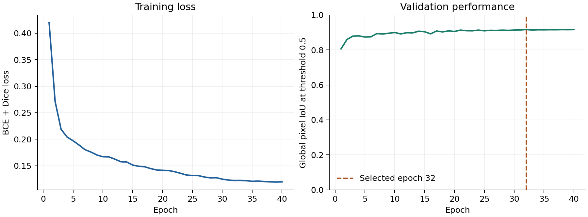
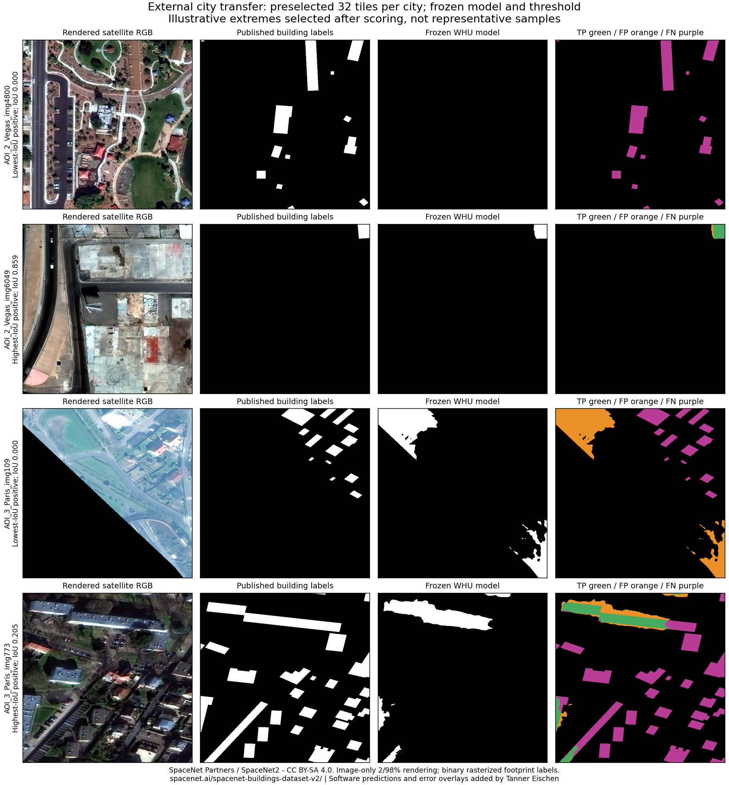

04 / Geospatial machine learning
Measure building segmentation before claiming an improvement.
A measured building-segmentation workbench connecting geographic evaluation, real local-image inference, and recoverable training.
Roof Segmentation · Verified local CPU release · external transfer limitations measured
- serving-path WHU test IoU
- 0.8921
- WHU test tiles
- 2,416
- external city tiles
- 64
The problem
The historical validation score mixed source geography across splits and included missing image/mask pairs. It could not establish predictive quality. The newer study preserves the WHU publisher partitions and checks every paired file.
My contribution
I connected a frozen WHU checkpoint to real CPU inference, bounded image uploads and polygons, explicit readiness and failure states, and a local-upload interface. I added full-state recovery, a simple RGB comparator, and an external-city experiment that exposes weak transfer.
How it works
- Frozen data and checkpoint
- Bounded local upload + CPU prediction
- Mask, contours and explicit failure states
- Versioned evaluation and recoverable training
Decisions that shaped the release
- Measure the exact serving implementation in its locked CPU environment. Keep its results separate from the original CUDA AMP evaluation.
- Treat missing weights, corrupt images, oversized inputs and unavailable remote imagery as failures. Demo selection never fabricates predictions.
- Recover full optimizer, scheduler, AMP and RNG state at epoch boundaries with workers=0. Validate source, data, runtime and reviewed-label bindings before resuming.
- Register 32 SpaceNet tiles per city before downloading labels or scoring. Keep the original model and threshold frozen, including when transfer results are poor.
Measured results
The serving CLI and local HTTP API now share a manifest-bound prediction path. On one generated numerical image, their probability arrays and masks match exactly; an independent forward calculation agrees within the declared tolerance. This verifies a local serving transaction, not building accuracy or geographic transfer. Browser interaction and a new container startup remain unverified.
The original baseline remains the fixed reference; later training experiments did not improve it. The new CPU result scores every WHU test tile through the actual ModelService path. Reusing WHU is release verification, not a new independent holdout. The 64 preselected external tiles provide a separate, small transfer test.
| Measurement | Cases | Global IoU | Dice |
|---|---|---|---|
| Original WHU GPU baseline | 2416 | 0.892119 | 0.942984 |
| Locked CPU serving path / WHU | 2416 | 0.892125 | 0.942988 |
| RGB linear-discriminant baseline / WHU | 2416 | 0.337183 | 0.504319 |
| DeepLab development follow-up / WHU | 2416 | 0.863038 | 0.926485 |
| AOI_2_Vegas | 32 | 0.401588 | 0.573047 |
| AOI_3_Paris | 32 | 0.047352 | 0.090422 |
A failure worth inspecting
A strong within-domain score does not transfer to Paris.
With the original checkpoint and threshold unchanged, IoU fell to 0.4016 on Las Vegas and 0.0474 on Paris, 32 tiles per city. Different acquisition and annotation domains matter. The examples show actual masks, predictions and missed/false-positive pixels, without selecting another model after seeing the results.
{
"threshold": 0.5,
"samples_per_city": 32,
"regions": {
"AOI_2_Vegas": {
"samples": 32,
"iou": 0.4015882263973643,
"dice": 0.573047374162959,
"precision": 0.6536702855301016,
"recall": 0.5101287091779976,
"f1": 0.5730473741629589,
"pixel_accuracy": 0.8296798816568047,
"tp": 1545338,
"fp": 818756,
"fn": 1483972,
"tn": 9671934
},
"AOI_3_Paris": {
"samples": 32,
"iou": 0.04735199844592298,
"dice": 0.09042231936576166,
"precision": 0.12092433431310538,
"recall": 0.07220842891447594,
"f1": 0.09042231936576166,
"pixel_accuracy": 0.8839291420118344,
"tp": 78002,
"fp": 567046,
"fn": 1002232,
"tn": 11872720
}
},
"external_tuning": false
}Working artifacts


Limits and next questions
- Binary building extent only. SpaceNet footprint labels and WHU aerial annotations differ; this small transfer experiment does not establish performance on arbitrary addresses or sensors.
- Exact epoch-boundary resume supports workers=0. Persistent-worker RNG and mid-batch recovery are not claimed; CPU and CUDA recovery remain separate verified profiles.
- Scoring used four independent CPU services for verification; this does not change the deployed API concurrency limit.
- The CUDA memory measurement covers one native 512px, batch-1 training step. It does not reconstruct peak memory during the historical full training runs.
- The original three-seed factorial study continues separately. Its registered source was preserved; no incomplete study results are promoted here.
- WHU imagery is not republished because its exact redistribution terms remain unclear. The SpaceNet-derived examples include attribution and CC BY-SA 4.0 terms.
- The supported application flow is local PNG/JPEG/WebP upload. Remote imagery/address workflows are unavailable. Contours omit holes and components too small to form a polygon; scores are uncalibrated.
- Browser layout and interaction were not verified. Local release checks and the existing hosted portfolio are separate; no deployment was performed.
Inspect the evidence
New local serving verification (JSON) · Generated-fixture parity evidence (ZIP)
Compact evidence packet (ZIP) · Versioned evidence handoff (JSON)
Local review draft prepared November 1, 2026. Packet integrity and recorded scientific artifacts were checked; publication, browser interaction and current application deployment are separate gates.
Download sanitized evidence (JSON) · SHA256
Baseline per-image test counts and metrics (CSV)
Current CPU serving-path test counts (CSV)
External per-city image counts and metrics (CSV)
SpaceNet2 source, attribution and CC BY-SA 4.0 terms
Software controls, development-set measurements and model quality retain separate denominators. Verification dates and source revisions are recorded in the evidence download. Browser interaction remains unverified.